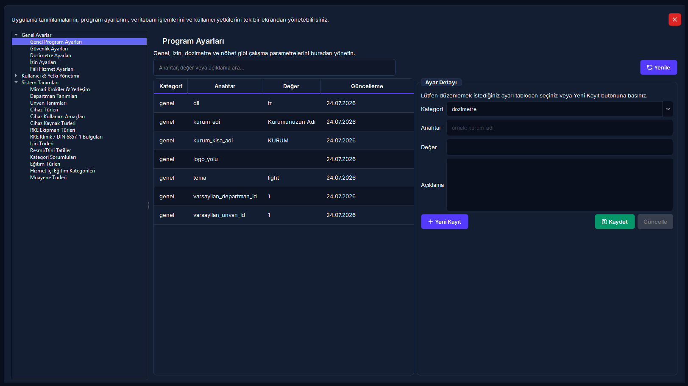
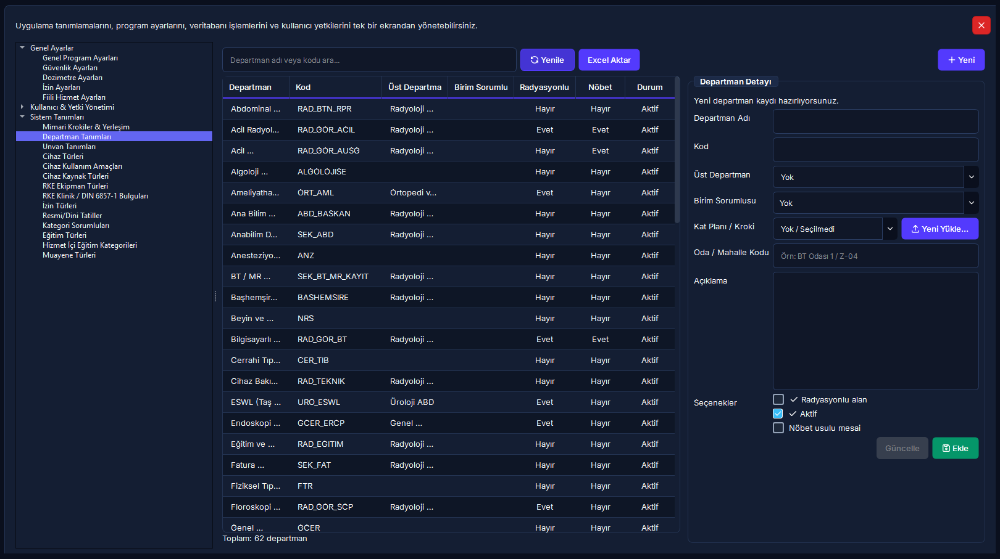

Sistem Ayarları, E-Posta & Tanımlamalar
Kurum antet başlıkları ve çift logo parametreleri, otomatik algılamalı e-posta (SMTP) ve dış ağ 2FA doğrulaması, hastane departman hiyerarşisi, mimari kroki eşlemesi, unvan mirası, tatil takvimi otomasyonu ve veri bütünlüğü odaklı hibrit silme kurallarını yönetmenizi sağlar.
Kısa Reçete: Kurum Antet ve Çıktı Parametrelerini Ayarlama
Tüm resmi raporlarda, tutanaklarda ve PDF çıktılarında kurumun resmi üst başlıklarının ve çift logosunun doğru basılması.
[Sistem Yönetimi] > [Genel Ayarlar] > [Rapor ve Çıktı Ayarları] ekranından başlık ve logo satırını seçin; sağ panelde metni veya [Gözat...] butonuyla logoyu seçip [Aktif] kutusunu işaretleyin ve [Değişiklikleri Kaydet] butonuna basın.
Seçilen logolar güvenli kaynak alanına kopyalanır ve tüm rapor motorları kurum antetini bu ayarlardan okur; kurum adı boşsa sistem sahte kurum adı üretmez, varsayılan RADPYS başlığını kullanır.
5N1K Kural ve Arayüz Çözümleme Tablosu
Sistem parametreleri, e-posta güvenliği, hiyerarşik tanımlamalar ve veri bütünlüğü koruma kuralları.
Kritik Sahada Yanlış Bilinen Kurallar (Mit Avcısı)
Süreç Akış Şeması
Geçerli mi?"} B -->|Döngü / Geçersiz Kod| C["Hata Uyarısı: İşlem Durdurulur"] B -->|Geçerli| D["Bağımlılık Kontrolüne Geçilir"] end subgraph S2 ["2. AŞAMA: BAĞIMLILIK VE HİBRİT SİLME DENETİMİ"] direction LR E{"Silme veya Pasife Alma
Talebi mi?"} -->|Düzenlemeden Pasif| F{"Aktif Personel / Alt Birim
Var mı?"} F -->|Evet| G["ENGEL: Önce Transfer İsteyin"] E -->|Sil Butonu| H{"Bağlı Geçmiş Kayıt
Var mı?"} H -->|Evet| I["Otomatik Pasife Alınır"] H -->|Hayır| J["Kalıcı Olarak Temizlenir"] end subgraph S3 ["3. AŞAMA: SİSTEM SENKRONİZASYONU"] direction LR K["Ayar / Tanım Veritabanına İşlenir"] --> L(["İlgili Modüller ve Web API Güncellenir"]) end D ==> E E -->|Aktif Kayıt| K I & J ==> K
- Tanımlama ve Format Kontrolü: Departman ve unvan kodları standart formata göre, üst departman seçimleri ise hiyerarşi döngüsüne karşı doğrulanır.
- Bağımlılık ve Hibrit Silme Denetimi: Düzenleme formundan aktif personelli birim kapatılmak istenirse transfer uyarısı verilir; [Sil] butonunda ise bağlı kaydı bulunan tanımlar pasife alınır, boş olanlar silinir.
- Sistem Senkronizasyonu: Kaydedilen kurum ayarları, SMTP/2FA tercihleri ve tanımlar tüm masaüstü formlarına ve Web Portalına anlık yansır.
Arayüz Ekran Görünümleri



Adım Adım İşlem Rehberi
1. Kurum Anteti, Çift Logo ve Program Ayarlarını Güncelleme
- Sol gezinim ağacından [Genel Ayarlar] altındaki ilgili kategoriyi (örneğin [Rapor ve Çıktı Ayarları] veya [Güvenlik Ayarları]) açın.
- Tablodan düzenlemek istediğiniz ayara tıklayın; sağdaki [Ayar Detayı] panelinde yeni değeri yazın veya logo seçimleri için [Gözat...] butonunu kullanın.
- Başlık ve logoların raporlarda görünmesi için [Aktif] kutusunun işaretli olduğunu doğrulayıp [Değişiklikleri Kaydet] butonuna tıklayın.
2. Departman, Mimari Kroki ve Kardeş Sistem Tanımlarını Yönetme
- [Sistem Tanımları] > [Departman Tanımları] ekranında [Yeni] butonuna basın; ad, 2–20 karakterli büyük harf kod, varsa [Üst Departman] ve gerekiyorsa [Radyasyonlu alan] / [Nöbet usulü mesai] seçeneklerini işaretleyin.
- Birime mimari kat planı bağlamak için [Kat Planı / Kroki] yanındaki [Yeni Yükle...] butonunu ve oda/mahalle kodunu girip [Kaydet] butonuna tıklayın.
- Unvan, Cihaz Türü, Cihaz Kullanım Amacı, Cihaz Kaynak Türü, RKE Ekipman Türü, RKE Klinik Bulguları, İzin Türleri, Eğitim veya Muayene Türleri ekranlarında da aynı [Yeni], [Düzenle], [Sil] (hibrit silme) ve [Excel Aktar] yapısını kullanın.
3. Resmi ve Dini Tatil Takvimini Otomatik Oluşturma
- [Sistem Tanımları] > [Resmi/Dini Tatiller] ekranını açın; araç çubuğundaki [Resmi Tatilleri Ekle] butonuna tıklayıp yılı girerek 8 sabit resmi tatili (1 Ocak, 23 Nisan, 1 Mayıs, 19 Mayıs, 15 Temmuz, 30 Ağustos ve 28–29 Ekim dahil) tek seferde ekleyin.
- Ramazan veya Kurban Bayramı eklemek için [Yeni] butonuna basıp bayram türünü seçin, [Tüm bayram günlerini otomatik oluştur (Arife + Bayram)] kutusu aktifken yalnızca Arife gününün tarihini girip [Kaydet] butonuna tıklayın.
4. E-Posta (SMTP), Otomatik Bildirimler ve Web Portal 2FA Kurulumu
- [Genel Ayarlar] > [E-Posta ve Bildirim Ayarları] sayfasında gönderici e-posta adresinizi yazın; sistem sağlayıcı ve port bilgisini otomatik tanır.
- Gmail/Outlook gibi sağlayıcılarda [Google Uygulama Şifresi Al] yardımıyla aldığınız uygulama şifresini (veya kurumsal SMTP parolanızı) girin; ihtiyaç duyduğunuz 2FA OTP ve otomatik e-posta bildirim onay kutularını işaretleyin.
- [Bağlantıyı Test Et (Test E-Postası Gönder)] butonuyla e-posta gönderimini doğruladıktan sonra [Ayarları Kaydet ve Etkinleştir] butonuna basın.
Sıkça Sorulan Sorular (SSS)
Fiili hizmet (FHZ) hesaplama yöntemini yıl ortasında değiştirebilir miyiz?
Hesaplama yöntemi değiştirildiğinde geçmiş dönem puantajlarının tutarlılığı etkilenebileceği için sistem Kritik Ayar Değişikliği onayı ister. Mevcut verilerin bütünlüğü açısından bu değişikliğin yıl veya dönem başında yapılması önerilir.
Departman düzenleme penceresinde [Aktif] kutusunu kaldırdığımda sistem neden uyarı veriyor?
Departman düzenleme ekranından doğrudan pasife alma işleminde o birime kayıtlı personel veya aktif alt departman varsa sistem yetim kayıt oluşmaması için işlemi durdurur. Önce personelleri [Personel Listesi] üzerinden başka bir aktif birime aktarmanız gerekir.
Genel Program Ayarları tablosuna neden yeni satır veya özel anahtar ekleyemiyoruz?
Program ayarları uygulamanın çekirdek kurallarını yöneten sabit parametrelerdir. Sistem, arka planda karşılığı olmayan rastgele anahtarların eklenmesini güvenlik ve kararlılık amacıyla engeller; yalnızca mevcut parametrelerin değerleri güncellenebilir.